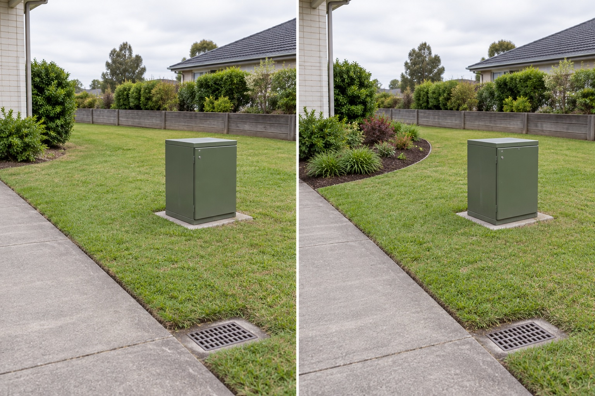

Find the working face
Record doors, hinges, locks, labels and the direction from which equipment is approached without opening, touching or attempting to identify internal components.
First identify the equipment owner, the opening or service face, and every route a technician may need. Follow that provider’s current clearance rules, then place any visual planting outside the required area and use it to redirect attention from one public viewpoint rather than enclosing the box.
Editorially reviewed September 9, 2026.
This AI-generated comparison is visual inspiration, not equipment identification, a clearance plan, electrical or gas advice, excavation approval, planting prescription, easement interpretation or safety guarantee.

Record doors, hinges, locks, labels and the direction from which equipment is approached without opening, touching or attempting to identify internal components.
Keep the path from the street or property entrance to the equipment open instead of creating a hidden gap behind a decorative screen.
Shape a low planted edge away from the cabinet so the garden has a stronger focal line without pretending the equipment has disappeared.
PG&E yard-safety guidance publishes provider-specific planting and access rules for pad-mounted transformers and tells customers to contact the utility-marking service before digging. Its landscape-screen document says its concepts are illustrations rather than working drawings and that site materials and methods must be determined for the particular location. Those figures are not universal dimensions; obtain the rules for your actual equipment and address.
The green cabinet, concrete pad, door seam, open lawn approach, walkway, surface drain, house edge, rear boundary, ground level and camera position remain unchanged. The concept does not paint, wrap, cover, move, attach to or conceal the equipment.
Use labels or account records to contact the responsible utility or service provider. Ask for current access, clearance, ventilation, easement and planting requirements.
Include equipment doors, working space, routes for people and replacement equipment, nearby meters, covers, overhead lines and emergency access.
Use the official utility-locating process where you live and obtain any required permissions before planting, staking, edging, trenching or installing irrigation.
Verify plant spread, roots, thorns, shedding, pruning access, toxicity, invasiveness and local suitability—not just nursery size or the AI image.
Avoid fake-rock covers, storage beside equipment, thorny planting, vines, dense shrubs, locked screens, loose pots in the work route, irrigation aimed at equipment, or a narrow access slot that cannot support real maintenance. Do not copy another provider’s clearance diagram without checking yours.
Stop if ownership, equipment type, service face, underground routes or provider requirements are unknown. Contact the responsible utility before digging, planting, attaching, covering, painting, moving, fencing or changing drainage near the equipment; use qualified help for electrical, gas or structural questions.
Only after identifying the equipment and obtaining its provider’s current rules. Planting must stay outside required working and access areas at mature size; a better visual strategy may be to redirect the eye from one viewpoint instead of hiding the box.
There is no safe universal number for every cabinet, meter or transformer. The required area varies by equipment, provider and location, so use the responsible utility’s instructions for the exact installation.
Do not assume “removable” makes it acceptable. A screen can still obstruct normal or emergency access, doors, ventilation or replacement work. Ask the equipment owner before placing anything in the required area.
Yes. Planting can involve underground services, easements and equipment-specific restrictions. Follow the official utility-locating and permission process where you live before disturbing the ground.
Upload a level, wide photo to compare visual emphasis without erasing the actual utility cabinet, path, drain or service approach.
AI-generated visualizations are concepts. Verify equipment ownership, access, clearances, utilities, easements, planting and professional requirements before physical work.